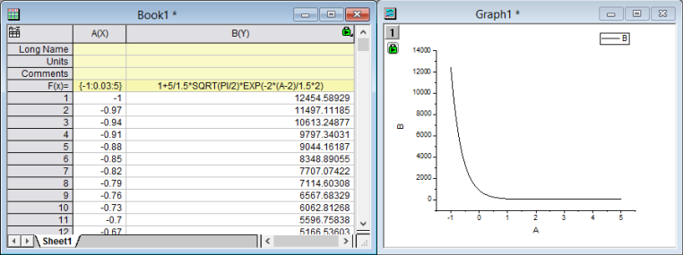

FAQ-690 値の設定ダイアログのクイックサンプル
SCV-quick-example
最終更新日：2016/11/04
値の設定ダイアログボックスで、ワークシートや行列データセットについて、変数を定義したり、LabTalk スクリプトを使ってデータの前処理を行うなど、様々な数学的処理を行うことができます。このツールについての詳細は、以下の項目もご覧ください。
-
以下に、列値の設定ツールを使ったサンプルを2つご紹介します。
| Note: シンプルになった「スプレッドセルシンタックス」はOrigin2016以前のバージョンではご利用いただけません。以下の2つの例は、旧バージョンのシンタックスを使っています。最初のサンプルは、新しいシンタックスで実行できます。2つの例をご覧ください。 |
単一列の値を設定
次の簡単なチュートリアルは、このダイアログを使ってガウス曲線のデータを生成する方法を示しています。
- 標準ツールバーの新規ワークブックボタン
 をクリックして、新しいワークブックを作成します。
をクリックして、新しいワークブックを作成します。
- 列Aを選択し、右クリックして、ショートカットメニューから列値の設定を選択し、値の設定ダイアログを開きます。
- 列の計算式に {-1:0.03:5} と入力し、適用ボタンをクリックします。列Aには一連の数字が入力されます。
- ダイアログを閉じることなく、ナビゲーションボタンのうちの1つを使用して2つ目の列に式を入力します。次へボタン
 をクリックします。列Bがワークシートで選択されるのが分かります。
をクリックします。列Bがワークシートで選択されるのが分かります。
- そして、列の計算式編集ボックスに1 + (5/(1.5*sqrt(PI/2)))*exp(-2*((col(a)-2)/1.5)^2) と入力し、再計算ドロップダウンリストで自動を選択します。
- OKボタンをクリックします。値の設定ダイアログが閉じます。次のワークシートのような結果になります。
(列Bの折れ線グラフを作成すると、ワークブックの隣にあるようなグラフになります。)

- 列BのF(X)列ラベルをダブルクリックし、式を1+(5/(1.5*sqrt(PI/2)))*exp(-2*((col(a)-2)/1.5)*2)に変更します。すると、列Bの値は自動的に変換している事がわかります。
(再計算ボタン をクリックすると、グラフも合わせて更新されます。)
をクリックすると、グラフも合わせて更新されます。)
- 
 |
Originは値の設定ダイアログで列のサブ範囲を使用して関数の引数に設定できます。
例：列Aのサブ範囲i-3 から i+3 ( i は行インデックス)までの合計を計算するには、列の式編集ボックスに式を入力できます。
Total(col(A)[i-3:i+3])
|
| Note:列値の設定かF(x)=列ラベル行でiとjを使う場合、小文字を使います。大文字のIとJは、ワークシート列のショートネームに影響を与えてしまいます。 |
複数列の値を同時に設定する
次の簡単なチュートリアルは、値の設定ダイアログを使って瞬時に複数の列に値を入力できるか示します。
- 標準ツールバーの新規プロジェクトボタン
 をクリックして、新しいプロジェクトを作成します。
をクリックして、新しいプロジェクトを作成します。
- 複数ASCIIのインポートボタン
 をクリックして、<Origin フォルダ>\Samples\Import and Export\ のパスにあるF1.datとF2.datをインポートします。impASCダイアログでは、インポートモードドロップダウンリストからブックを新たに作って読み込むを選択します。
をクリックして、<Origin フォルダ>\Samples\Import and Export\ のパスにあるF1.datとF2.datをインポートします。impASCダイアログでは、インポートモードドロップダウンリストからブックを新たに作って読み込むを選択します。
- 2つのワークブック、F1とF2が作成されます。標準ツールバーの新規ワークブックボタン をクリックし、もう1つワークブックを作成します。
- 3番目のワークブックがアクティブな状態で、列の追加ボタン
 をクリックします。全ての列を選択し、列：複数列の値を設定とメインメニューから操作するか、右クリックして複数列の値を設定をコンテキストメニューから選択して値の設定ダイアログを開きます。
をクリックします。全ての列を選択し、列：複数列の値を設定とメインメニューから操作するか、右クリックして複数列の値を設定をコンテキストメニューから選択して値の設定ダイアログを開きます。
- スクリプトを表示ボタン
 をクリックして下部パネルを拡張します。次のスクリプトを実行前の処理スクリプト編集ボックスに入力します。
をクリックして下部パネルを拡張します。次のスクリプトを実行前の処理スクリプト編集ボックスに入力します。
range r1=[F1]F1!wcol(j); //"j" は列インデックス
range r2=[F2]F2!wcol(j);
- 列の式編集ボックスに(r1+r2)/2 と入力します。
- オプション：式セルを直接編集の項目のチェックを外します。
- オプション：式テキストと選択して、式テキストダイアログに(F1+F2)/2を入力してOKボタンをクリックします。
- 値の設定ダイアログでOKボタンをクリックします。結果がワークシートに反映され、F(X)列ラベル行には式では無くて(F1+F2)/2 が表示されます。
必要なOriginのバージョン: Origin 9.1 SR0以降
キーワード:値の設定ダイアログ